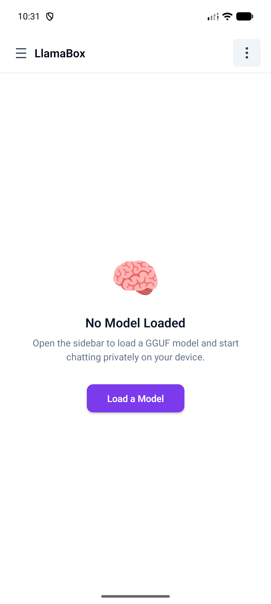
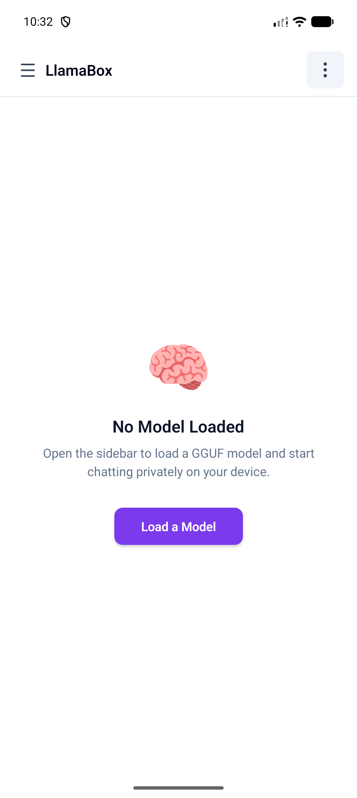

01
Airplane & offline travel
Draft emails, summarize notes, and brainstorm when Wi‑Fi is a myth. Model stays on the handset.
Travelers · digital nomads
On-device GGUF · llama.cpp · no cloud · no accounts. Private chat — even on airplane mode.
Cloud AI asks you to trust a server.
LlamaBox lets you verify the device.
Privacy is not a policy paragraph — it is the architecture. Inference never phones home because there is nowhere to phone.
Not another chatbot wrapper. A local reasoning engine for people who need control, continuity, and silence.
Draft emails, summarize notes, and brainstorm when Wi‑Fi is a myth. Model stays on the handset.
Work with sensitive quotes and drafts without routing text through a third-party model API.
Explain concepts, quiz yourself, rewrite notes — without selling your study history to an ad stack.
Photograph a whiteboard, receipt, or diagram. Multimodal models describe it locally on CPU.
Therapy-adjacent journaling, health questions, private plans — conversations that never become training data.
Experiment with GGUF models, sampling knobs, and system prompts on real mobile hardware.
Useful AI where bandwidth is expensive or censored. Download once; think forever offline.
Generate a reply, then listen with built-in TTS while you walk, cook, or drive (safely parked).
A complete local-LLM toolkit — models, chat, vision, voice, and visibility into what the phone is doing.
Once weights are stored, generation never requires the network. Airplane mode is a feature, not a failure state.
Camera or gallery → local CLIP-style encode → answer. Image encoder forced to CPU so the UI stays alive.
Download curated GGUF builds or import your own. Q4_K_M recommended for mobile speed/quality.
System TTS reads answers aloud for hands-free follow-through.
Live RAM / CPU insight while a model is loaded — know what your phone is carrying.
JSI/TurboModules for streaming tokens without legacy bridge tax. Zustand + SQLite + AsyncStorage — each store does one job well.
CPU-only today. OpenCL / engine selector after real-device diagnostics. No fake GPU toggle.
From install to private chat without wiring your life to someone else’s GPU cluster.
Android 7.0+ arm64. Request access — package com.llamabox.
In-app download or import. Start small (~0.5–1B Q4) on mid-range phones.
Optional airplane mode. Tokens generate on-device; history stays in SQLite.
Honeycomb dark chrome. Local models. Chat that does not stream to the sky.


Mid-range Android, ~1B Q4_K_M class model. Your silicon will vary — that is the point of on-device.
Deep dive: architecture docs · llms-full.txt for AI agents.
Cloud assistants win on raw model size. LlamaBox wins when the data must not leave the room.
| Capability | LlamaBox | Typical cloud AI app |
|---|---|---|
| Inference location | On your phone | Vendor servers |
| Works offline | Yes (after model download) | No |
| Account required | No | Usually yes |
| Telemetry / training risk | None by design | Policy-dependent |
| Auditable privacy | Architecture + AGPL intent | Trust the vendor |
| Largest frontier models | Bounded by device RAM | Yes |
| Vision on-device | Supported (mmproj) | Cloud-only typical |
Citable facts for humans — and for answer engines via schema + llms.txt.
Request access. Bring a phone. Leave the cloud behind.